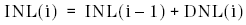
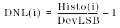

INL and DNL (Ramp selected)
The following formula is used to calculate the Integral Non-Linearity:

The formula to calculate DNL(i) for a ramp is used.
The following formula is used to calculate the Differential Non-Linearity:

The DevLSB can be calculated using the EndPoint method, ZeroPoint method or the RMS method.
Histo(i) gives back the number of codes in bin i of the histogram.